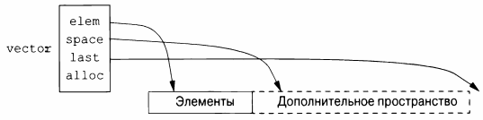
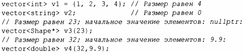
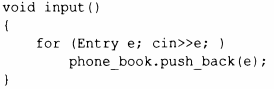

⇐11.1 Введение 11.2.1 Элементы⇒
Наиболее полезным контейнером стандартной библиотеки является vector. Вектор представляет собой последовательность элементов данного типа. Элементы хранятся в памяти последовательно. Типичная реализация vector (§4.2.2, §5.2) будет состоять из дескриптора, хранящего указатель на первый элемент, на элемент, следующий за последним, и на элемент, следующий за выделенной памятью (§12.1) (или эквивалентную информацию, представленную как указатель плюс смещения).
Кроме того, он содержит аллокатор (распределитель памяти, здесь alloc), от которого вектор может получать память для своих элементов. Аллокатор по умолчанию для получения и освобождения памяти использует операторы new и delete (§ 13.6).
Мы можем инициализировать vector с набором значений его типа элемента:
Доступ к элементам осуществляется через индексы. Предполагая, что мы определили << для Entry, можно написать:
Как обычно, индексы начинаются с О, так что book [О] содержит запись для David Hurne. Функция-член вектора size () возвращает количество элементов в векторе.
Элементы вектора составляют диапазон, поэтому мы можем использовать цикл for для диапазона(§ 1.7):
При определении vector мы указываем его начальный размер (начальное количество элементов):
Явно указанный размер заключается в обычные круглые скобки, например (23) ; по умолчанию элементы инициализируются значением по умолчанию для типа элемента (например, nullptr - для указателей и О - для чисел). Если вам не нужно значение по умолчанию, можете указать требуемое значение в качестве второго аргумента (например, 9. 9 для 32 элементов v4).
Исходный размер можно изменить. Одной из наиболее полезных операций над вектором является push_back (), которая добавляет новый элемент в конец вектора, увеличивая его размер на единицу. Например, если предположить, что мы определили оператор >> для Entry, можно написать
Здесь выполняется чтение записей Entry из стандартного ввода в phone_book до тех пор, пока не будет достигнут конец ввода (например, конец файла) или операция ввода не встретит ошибку формата.
vector стандартной библиотеки реализован таким образом, что увеличение вектора путем многократного применения push_back () оказывается эффективным. Чтобы показать, почему это так, рассмотрим разработку простого Vector из глав 4 и 6, используя представление, показанное на схеме выше:
vector стандартной библиотеки имеет члены capaci ty (), reserve () и push_back ().Функция reserve () используется пользователями vector и другими членами vector для выделения памяти для дополнительных элементов. Когда требуется выделение памяти для новых элементов, имеющиеся элементы перемещаются в новое местоположение.
При наличии функций capacity () и reserve () реализация push_back () тривиальна:
Теперь распределение и перемещение элементов происходят нечасто. Раньше я использовал reserve (), пытаясь повысить производительность, но это оказалось пустой тратой усилий: эвристика, используемая vector, в среднем оказалась лучше моих догадок, так что теперь я явно использую reserve () только для того, чтобы избежать перераспределения элементов, когда планирую использовать указатели на элементы.
vector может быть скопирован путем присваивания или инициализации. Например:
Копирование и перемещение векторов реализуются конструкторами и операторами присваивания, как описано в §5.2. Присваивание вектора сопровождается копированием его элементов. Таким образом, и book2, и phone _ book после инициализации book2 хранят отдельные копии каждой записи Entry в телефонной книге. Когда вектор содержит много элементов, столь невинно выглядящие присваивания и инициализации могут стать весьма дорогими. Если копирование нежелательно, следует использовать ссылки или указатели(§ 1.7) или операции перемещения (§5.2.2).
Вектор стандартной библиотеки очень гибкий и эффективный. Используйте его как контейнер по умолчанию, т.е. используйте его, если только у вас нет веской причины использовать какой-либо другой контейнер. Если вы избегаете вектора из-за сомнений в его эффективности, выполните измерения. Наша интуиция в особенности ошибочна в вопросах эффективности использования контейнеров.